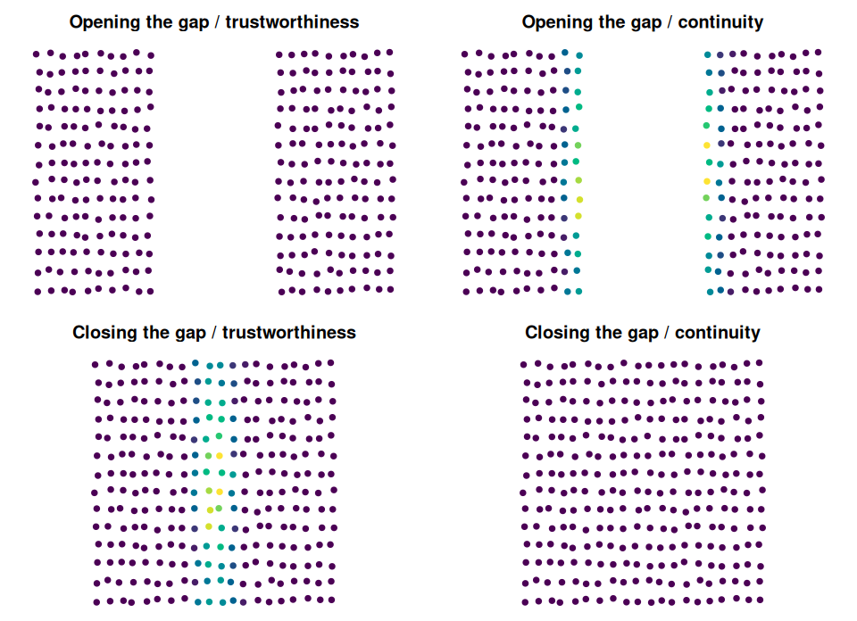

Use this guide to choose a local metric from the relationship that
matters for your analysis. Start with nn_preservation()
when neighbor identity is the main concern. Use trustworthiness or
continuity for rank-sensitive penalties, local radius correlation for
relative neighborhood scale, mutual-neighbor correlation for reciprocal
graph structure, and RNX to inspect agreement over multiple neighborhood
sizes.
The examples use exact brute-force neighbors so their results are deterministic on this small dataset.
library(quadra)
iris_x <- as.matrix(iris[, -5])
pca_iris <- stats::prcomp(iris_x, retx = TRUE, rank. = 2)$xNeighborhood Preservation
Nearest-neighbor preservation is a useful default: it reports the
mean fraction of input neighbors retained in the embedding. Pass a
vector to k to inspect more than one neighborhood size. Chen and Buja use the
fraction of shared neighbors to assess local structure.
neighbor_k <- c(15, 30)
neighbor_scores <- nn_preservation(
iris_x,
pca_iris,
k = neighbor_k,
nn_method_in = "brute",
nn_method_out = "brute",
n_threads = 1
)
chance_baselines <- neighbor_k / (nrow(iris_x) - 1)
round(
data.frame(
k = neighbor_k,
preservation = unname(neighbor_scores),
chance_baseline = chance_baselines
),
3
)## k preservation chance_baseline
## 1 15 0.801 0.101
## 2 30 0.916 0.201For this two-dimensional Iris PCA, both preservation values are
substantially above their scale-specific chance baselines. The raw
values answer different neighborhood-scale questions, so the larger
value at k = 30 should not be read as evidence that 30
neighbors is universally preferable to 15.
Collapsed Embeddings and Ties
In a collapsed embedding, all observations map to the same point and
all output distances are zero. The distance-matrix function
nbr_pres() includes every observation tied at the
neighborhood boundary. Its output neighborhood then contains every input
neighbor, giving a perfect score of one:
collapse_input <- matrix(c(0, 1, 3, 10), ncol = 1)
collapse_output <- matrix(0, nrow = 4, ncol = 2)
collapse_din <- as.matrix(stats::dist(collapse_input))
collapse_dout <- as.matrix(stats::dist(collapse_output))
collapse_preservation <- nbr_pres(collapse_din, collapse_dout, k = 1)
collapse_preservation## [1] 1 1 1 1## [1] 0 0Graph-based functions such as nn_preservation() select
exactly k neighbors, but tied selections can still reflect
arbitrary ordering. Supplied neighbor graphs use their given order;
exact-rank metrics break distance ties by column order. For collapsed or
nearly collapsed embeddings, inspect raw output distances or coordinate
spread alongside neighborhood scores. The global
preservation guide shows how detailed pair results expose raw
distances even when the metric independently rescales input and output
distances.
Trustworthiness and Continuity
trustworthiness() and continuity() are
exact rank-penalty neighborhood metrics for distance matrices.
Trustworthiness penalizes observations that appear as low-dimensional
neighbors even though they are not close in the input space. Continuity
applies the dual penalty to input-space neighbors that are no longer
nearby in the embedding. Venna and Kaski
introduced both measures.
din <- as.matrix(stats::dist(iris_x))
dout <- as.matrix(stats::dist(pca_iris))
rank_k <- c(5, 15, 30)
trust_scores <- trustworthiness(din, dout, k = rank_k)
continuity_scores <- continuity(din, dout, k = rank_k)
round(
data.frame(
k = rank_k,
trustworthiness = unname(trust_scores),
continuity = unname(continuity_scores)
),
3
)## k trustworthiness continuity
## 1 5 0.979 0.990
## 2 15 0.986 0.993
## 3 30 0.994 0.996Values nearer 1 mean smaller rank penalties. Both metrics are above 0.9 at the shown scales, so this embedding introduces relatively small trustworthiness and continuity penalties for these Iris neighborhoods.
These functions take two full distance matrices and require
k to be less than half the number of observations. If you
have Euclidean coordinates, exact_rank_profiles() can
compute the same penalties one query at a time. For a larger dataset,
sample query_rows and keep the full set of candidates. If
you only need to count which neighbors survived, you can use the
neighbor graphs directly with nn_preservation() or
nbr_pres_knn().
Where did a gap remove neighbors?
Split a slightly jittered grid down the middle. Pointwise continuity shows which observations lost neighbors when the gap opened. Swapping the reference and output makes closing the gap an intrusion and swaps the two kinds of rank penalty.
set.seed(918)
grid <- as.matrix(expand.grid(
x = seq(-1, 1, length.out = 20),
y = seq(-1, 1, length.out = 14)
))
sheet <- grid + matrix(runif(length(grid), -0.02, 0.02), ncol = 2)
split_sheet <- sheet
split_sheet[sheet[, 1] > 0, 1] <- sheet[sheet[, 1] > 0, 1] + 1
before <- as.matrix(dist(sheet))
after <- as.matrix(dist(split_sheet))
tear <- pointwise_rank_preservation(before, after, k = 12)
merge <- pointwise_rank_preservation(after, before, k = 12)
round(
rbind(
opening = vapply(tear, mean, numeric(1)),
closing = vapply(merge, mean, numeric(1))
),
3
)## trustworthiness continuity
## opening 0.999 0.980
## closing 0.980 0.999Each query contributes one score. The column means recover the
aggregate measures. The plot uses 1 - score to make larger
penalties brighter on a shared scale.
par(mfrow = c(2, 2), mar = c(0.5, 0.5, 2.4, 0.5))
limits <- c(0, max(1 - tear$trustworthiness, 1 - tear$continuity))
plot_penalties <- function(xy, scores, title) {
for (metric in names(scores)) {
vizier::embed_plot(
xy,
x = 1 - scores[[metric]][, "k12"],
limits = limits,
color_scheme = "grDevices::Viridis",
title = paste(title, metric, sep = " / "),
fixed_aspect = TRUE,
show_axes = FALSE,
cex = 1.25
)
}
}
plot_penalties(split_sheet, tear, "Opening the gap")
plot_penalties(sheet, merge, "Closing the gap")
Most of the observations away from the cut keep their neighbors. The bright strip changes columns when the direction of the comparison reverses.
Local Procrustes Error
Neighbor overlap stays perfect when a neighborhood’s members stay together through a shear. Local Procrustes aligns the same observations and reports the remaining shape error. The matched patches follow Goldberg and Ritov. Quadra reports a normalized, fixed-scale residual for each patch.
patch <- rbind(c(0, 0), c(1, 0), c(2, 1), c(0.4, 2))
sheared <- patch %*% rbind(c(1, 0), c(0.8, 1))
c(
overlap = mean(nbr_pres(
as.matrix(dist(patch)),
as.matrix(dist(sheared)),
k = 3
)),
local_procrustes = local_procrustes(patch, sheared, k = 3)
)## overlap local_procrustes
## 1.0000000 0.1734413The alignment allows translation, rotation, and reflection. Scale is fixed, so a uniform change in size also contributes to the error. The Swiss-roll workflow shows how to calibrate the whole embedding once and inspect the remaining per-point errors. Swiss-roll workflow
Gap Index
gap_index() uses the Delaunay triangles of a 2D
embedding to measure changes in the areas between observations. Request
ret_extra = TRUE for triangle indices, relative areas, and
signed deformations for a map. The index compares area shares, so shear
can preserve the score while changing shape. Ros, Arleo and Paulovich
introduce Gap Index and provide their implementation. Swiss-roll
map
Local Radius Correlation
Nearest neighbor preservation asks whether the same observations
remain nearby. local_radius_correlation() asks a different
local-scale question: do points in dense or sparse regions of the input
data still have relatively small or large nearest-neighbor radii in the
embedding? Narayan,
Berger and Cho compare local radii when assessing density
preservation.
radius_scores <- local_radius_correlation(
iris_x,
pca_iris,
k = c(15, 30),
nn_method_in = "brute",
nn_method_out = "brute",
n_threads = 1
)
round(radius_scores, 3)## lrc15 lrc30
## 0.893 0.940The strong positive correlations show that observations with relatively small or large input-space radii tend to retain that relative scale in this Iris embedding. This conclusion concerns scale, not which observations are neighbors.
By default, the metric uses Spearman correlation between the distance
to the kth nearest non-self neighbor in the input data and
output embedding. Set statistic = "mean" to use the mean
distance to the first k neighbors, or
log = TRUE to compare log radii when all selected radii are
positive.
With exact neighbors, squared Euclidean preserves the default
Spearman ordering of kth-neighbor radii. It can still
change Pearson correlations, mean-neighbor summaries, or
approximate-search results.
If you already have nearest-neighbor graphs with distance matrices, you can reuse them:
cached <- local_radius_correlation(
iris_x,
pca_iris,
k = c(15, 30),
nn_method_in = "brute",
nn_method_out = "brute",
n_threads = 1,
ret_extra = TRUE
)
cached_scores <- local_radius_correlation(
cached$nn_in,
cached$nn_out,
k = c(15, 30),
n_threads = 1
)
round(cached_scores, 3)## lrc15 lrc30
## 0.893 0.940The reused graphs give the same result because they retain both the indices and distances required by the radius calculation.
This metric is a radius or scale diagnostic. It does not estimate
local density directly and should be interpreted alongside
neighbor-identity metrics such as nn_preservation().
Mutual Neighbor Correlation
mutual_neighbor_correlation() compares mutual-neighbor
count patterns. For each observation, the mutual-neighbor count is the
number of its first k nearest neighbors that also include
the observation among their first k nearest neighbors. The
comparison draws on drnb.
mutual_scores <- mutual_neighbor_correlation(
iris_x,
pca_iris,
k = c(15, 30),
nn_method_in = "brute",
nn_method_out = "brute",
n_threads = 1
)
round(mutual_scores, 3)## mnc15 mnc30
## 0.768 0.910Both correlations are positive, so observations with high or low reciprocal neighbor counts in the input tend to retain that pattern in this embedding. The result is about graph structure, not direct neighbor overlap.
This is a graph diagnostic. It does not require neighbor distances,
so cached idx-only nearest-neighbor graphs are enough. It should be
interpreted alongside neighbor-identity metrics such as
nn_preservation() and scale metrics such as
local_radius_correlation().
Which pairs share the same neighbors?
Put 16 labeled observations on a ring. The reference graph links each row to the rows one step away in either direction. Compare it with two rings that take longer steps between the same observations. Every link is reciprocal and both new rings replace every direct neighbor. The comparison is Fujiwara and colleagues’ Neighbor Dissimilarity, equation 3, also implemented in their FEALM code.
ring <- function(step) {
i <- 0:15
list(idx = cbind((i + step) %% 16 + 1L, (i - step) %% 16 + 1L))
}
vapply(
c(step7 = 7, step3 = 3),
function(step) {
neighbor_dissimilarity(ring(1), ring(step), k = 2)
},
numeric(1)
)## step7 step3
## 0.000000 2.828427With step seven, rows two positions apart still share one neighbor, so Neighbor Dissimilarity (ND) is zero. With step three, that shared neighbor goes to pairs six positions apart. ND rises to 2.83. Each pair can gain or lose shared neighbors even if its two rows never link directly. MNIST example
Multi-Scale RNX Agreement
rnx_auc() summarizes exact rank-based neighborhood
agreement across all available neighborhood sizes, weighting smaller
neighborhoods more heavily. Use rnx_curve() when the
scale-specific pattern matters. Lee and colleagues
describe the RNX curve and its weighted
summary.
rnx_scores <- c(
auc = rnx_auc(din, dout),
rnx_curve(din, dout, k = c(5, 15, 30))
)
round(rnx_scores, 3)## auc rnx5 rnx15 rnx30
## 0.692 0.622 0.777 0.894An RNX value of 1 is perfect, 0 is the random-neighborhood baseline,
and negative values indicate worse-than-random agreement. The Iris curve
rises over the displayed values of k, so this embedding
preserves rank neighborhoods better at the broader shown scales. That
pattern diagnoses this embedding; it does not establish a universally
preferred embedding or neighborhood size.
pointwise_rnx() reports agreement for each observation
over the same scales. Request selected curve columns to find where
agreement changes as neighborhoods grow. The mean pointwise AUC recovers
the overall AUC. MNIST
example
With Euclidean coordinates, exact_rank_profiles()
computes both rank penalties and RNX for each query across a list of
embeddings. It ranks all other observations while keeping only the
current query’s distance and rank workspace. This lets the MNIST
workflow expand the candidate pool while scoring the same audit queries.
Full-pool
MNIST comparison
Can the same neighbors come back in a different order?
Mean relative rank error (MRRE) measures how far individual neighbors
move in the ranking. mrre_input follows the first
k input neighbors into the embedding.
mrre_output follows the embedding’s first k
neighbors back to the input. Both weight a change at rank 1 twice as
much as the same change at rank 2. Zero means all selected ranks are
unchanged. Co-ranking
definitions, equations 5 and 6
Keep the query at zero and cycle its three nearest neighbors in opposite directions. In the first map the original nearest neighbor moves to second place. In the second map it moves to third.
line <- cbind(0:7)
cycles <- list(
forward = cbind(c(0, 2, 3, 1, 4:7)),
reverse = cbind(c(0, 3, 1, 2, 4:7))
)
cycle_ranks <- exact_rank_profiles(line, cycles, k = 3, mrre = TRUE)
round(
t(vapply(
cycle_ranks,
function(p) {
c(
RNX = p$curve[[1]],
trust = p$trustworthiness[[1]],
continuity = p$continuity[[1]],
AUC = p$auc[[1]],
input_error = p$mrre_input[[1]],
output_error = p$mrre_output[[1]]
)
},
numeric(6)
)),
3
)## RNX trust continuity AUC input_error output_error
## forward 1 1 1 0.381 0.250 0.327
## reverse 1 1 1 0.381 0.327 0.250All three neighbors stay inside the cutoff. Even the full pointwise RNX curves coincide because the two cycles retain the same number of neighbors at every size. The input and output errors exchange places when the cycle reverses. Use these errors when it matters which neighbor occupies the first few positions. MNIST example
Do groups merge or split?
Place three clouds apart, then move two of their centers together. Steadiness measures how well groups sampled in the output hold together in the input. Cohesiveness checks the other direction. Swap the input and output coordinates to turn the merge into a split. Jeon and colleagues introduced the measures. Their original code accompanies the paper. Quadra follows ZADU 0.5.4 for shared-neighbor and map weights.
set.seed(450)
clouds <- replicate(3, matrix(rnorm(160, sd = 0.45), 80, 2), simplify = FALSE)
place <- function(centers) {
do.call(
rbind,
Map(function(z, offset) sweep(z, 2, offset, "+"), clouds, centers)
)
}
separate <- place(list(c(-4, 0), c(4, 0), c(0, 7)))
merged <- place(list(c(-0.1, 0), c(0.1, 0), c(0, 7)))
set.seed(451)
merge_scores <- steadiness_cohesiveness(separate, merged)
set.seed(451)
split_scores <- steadiness_cohesiveness(merged, separate)
round(rbind(merge = merge_scores, split = split_scores), 3)## steadiness cohesiveness
## merge 0.562 0.682
## split 0.683 0.602Steadiness falls further for the merge. Cohesiveness falls further
for the split. Each score summarizes losses between subgroups across
random walks. For a map, request ret_extra = TRUE and
inspect the two directions for the same rows. MNIST group
comparison
Using Existing Neighbor Graphs
For larger datasets, nn_preservation() can use
approximate neighbors through rnndescent. If
another tool already provides one-based nearest-neighbor index matrices,
pass them directly to nbr_pres_knn(). Rows are observations
and columns are neighbors in nearest-first order.
input_idx <- matrix(
c(2, 3, 1, 3, 2, 1, 5, 3, 4, 3),
ncol = 2,
byrow = TRUE
)
output_idx <- matrix(
c(2, 4, 1, 3, 2, 5, 5, 1, 4, 3),
ncol = 2,
byrow = TRUE
)
external_overlap <- nbr_pres_knn(
input_idx,
output_idx,
k = 2,
n_threads = 1
)
external_overlap## [1] 0.5 1.0 0.5 0.5 1.0Two rows retain both neighbors and the other three retain one of two. This shows how to reuse one-based neighbor indices from any graph-construction tool without adding an adapter dependency.
Supplied graphs use one-based indices in nearest-first order. Quadra
checks all columns, removes self-indices, and retains the first
k non-self neighbors, so self-inclusive graphs need at
least k + 1 columns. Supplied order resolves ties;
nbr_pres() includes boundary ties, while exact rank metrics
break ties by distance-matrix column order.
Graph searches pass supported sparse inputs to
rnndescent; nonnumeric data-frame columns are ignored.
Exact Euclidean and squared-Euclidean searches have the same ordering,
subject to ties and approximation.
Further Reading
Neighbor Overlap and Rank Criteria
France, S., & Carroll, D. (2007, July). Development of an agreement metric based upon the RAND index for the evaluation of dimensionality reduction techniques, with applications to mapping customer data. In International Workshop on Machine Learning and Data Mining in Pattern Recognition (pp. 499-517). Springer, Berlin, Heidelberg. https://doi.org/10.1007/978-3-540-73499-4_38
Chen, L., & Buja, A. (2009). Local multidimensional scaling for nonlinear dimension reduction, graph drawing, and proximity analysis. Journal of the American Statistical Association, 104(485), 209-219. http://dx.doi.org/10.1198/jasa.2009.0111
Lee, J. A., & Verleysen, M. (2009). Quality assessment of dimensionality reduction: Rank-based criteria. Neurocomputing, 72(7), 1431-1443. https://dx.doi.org/10.1016/j.neucom.2008.12.017
Lee, J. A., Peluffo-Ordonez, D. H., & Verleysen, M. (2015). Multi-scale similarities in stochastic neighbour embedding: Reducing dimensionality while preserving both local and global structure. Neurocomputing, 169, 246-261. https://dx.doi.org/10.1016/j.neucom.2014.12.095
Local Scale and Density Context
Cooley, S. M., Hamilton, T., Deeds, E. J., & Ray, J. C. J. (2019). A novel metric reveals previously unrecognized distortion in dimensionality reduction of scRNA-Seq data. BioRxiv, 689851. https://www.biorxiv.org/content/10.1101/689851v6
Narayan, A., Berger, B., & Cho, H. (2021). Assessing single-cell transcriptomic variability through density-preserving data visualization. Nature Biotechnology, 39, 765-774. https://doi.org/10.1038/s41587-020-00801-7